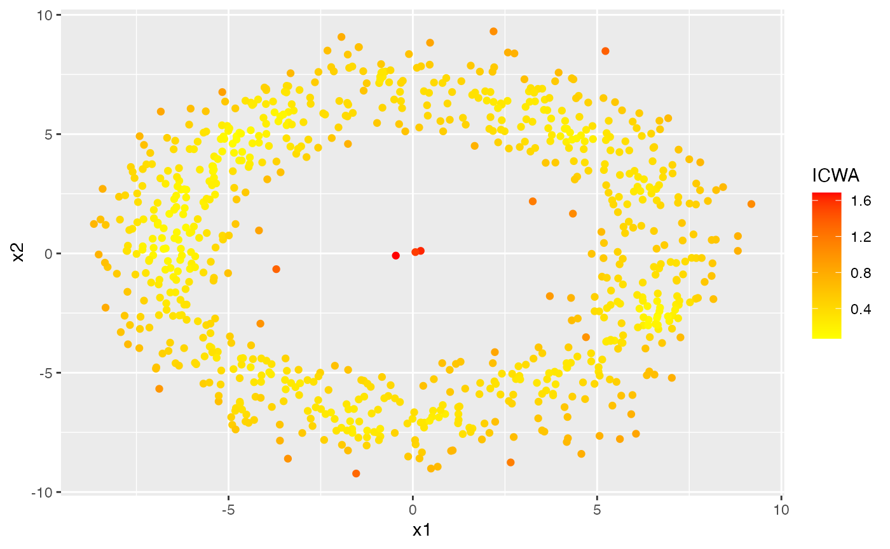
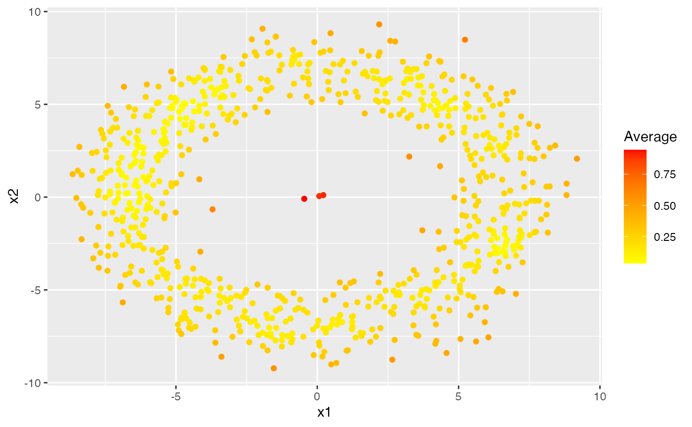

outlierensembles
outlierensembles.Rmd
library(outlierensembles)
library(ggplot2)
library(dbscan)
#>
#> Attaching package: 'dbscan'
#> The following object is masked from 'package:stats':
#>
#> as.dendrogramLet us add some anomalies inside an ring.
set.seed(1)
r1 <-runif(803)
r2 <-rnorm(803, mean=5)
theta = 2*pi*r1;
R1 <- 2
R2 <- 2
dist = r2+R2;
x = dist * cos(theta)
y = dist * sin(theta)
X <- data.frame(
x1 = x,
x2 = y
)
labs <- c(rep(0,800), rep(1,3))
nn <- dim(X)[1]
knn_auc <- lof_auc <- cof_auc <- rep(0, 10)
mu <- 0
z <- cbind(rnorm(3,mu, sd=0.2), rnorm(3,0, sd=0.2))
X[801:803, 1:2] <- z
ggplot(X, aes(x1, x2)) + geom_point()
Let us find outliers using the R package dbscan and use the IRT ensemble to construct an ensemble score.
# Using different parameters of lof for anomaly detection
y1 <- dbscan::lof(X, minPts = 5)
y2 <- dbscan::lof(X, minPts = 10)
y3 <- dbscan::lof(X, minPts = 20)
knnobj <- dbscan::kNN(X, k = 20)
# Using different KNN distances as anomaly scores
y4 <- knnobj$dist[ ,5]
y5 <- knnobj$dist[ ,10]
y6 <- knnobj$dist[ ,20]
# Dense points are less anomalous. Points in less dense areas are more anomalous. Hence 1 - pointdensity is used.
y7 <- 1 - dbscan::pointdensity(X, eps = 1, type="gaussian")
y8 <- 1 - dbscan::pointdensity(X, eps = 2, type = "gaussian")
y9 <- 1 - dbscan::pointdensity(X, eps = 0.5, type = "gaussian")
Y <- cbind.data.frame(y1, y2, y3, y4, y5, y6, y7, y8, y9)
ens1 <- irt_ensemble(Y)
df <- cbind.data.frame(X, ens1$scores)
colnames(df)[3] <- "IRT"
ggplot(df, aes(x1, x2)) + geom_point(aes(color=IRT)) + scale_color_gradient(low="yellow", high="red") 
Then we do the greedy ensemble.
ens2 <- greedy_ensemble(Y)
df <- cbind.data.frame(X, ens2$scores)
colnames(df)[3] <- "Greedy"
ggplot(df, aes(x1, x2)) + geom_point(aes(color=Greedy)) + scale_color_gradient(low="yellow", high="red") We do the ICWA ensemble next.
ens3 <- icwa_ensemble(Y)
df <- cbind.data.frame(X, ens3)
colnames(df)[3] <- "ICWA"
ggplot(df, aes(x1, x2)) + geom_point(aes(color=ICWA)) + scale_color_gradient(low="yellow", high="red") 
Next, we use the maximum scores to build the ensemble.
ens4 <- max_ensemble(Y)
df <- cbind.data.frame(X, ens4)
colnames(df)[3] <- "Max"
ggplot(df, aes(x1, x2)) + geom_point(aes(color=Max)) + scale_color_gradient(low="yellow", high="red") 
Then, we use the a threshold sum to construct the ensemble.
ens5 <- threshold_ensemble(Y)
df <- cbind.data.frame(X, ens5)
colnames(df)[3] <- "Threshold"
ggplot(df, aes(x1, x2)) + geom_point(aes(color=Threshold)) + scale_color_gradient(low="yellow", high="red") Finally, we use the mean values as the ensemble score.
ens6 <- average_ensemble(Y)
df <- cbind.data.frame(X, ens6)
colnames(df)[3] <- "Average"
ggplot(df, aes(x1, x2)) + geom_point(aes(color=Average)) + scale_color_gradient(low="yellow", high="red") 